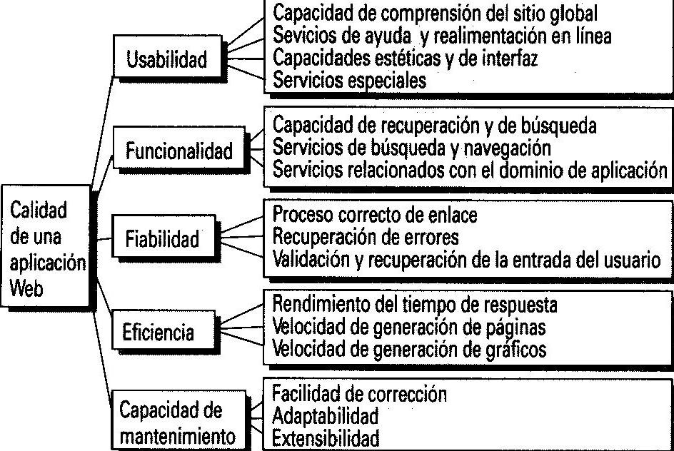

Los sistemas y aplicaciones basados en web es uno de los sucesos más significativos de la historia de la computación. Corresponden a una categoría de software basada en redes.
La ingeniería web se constituye en la aplicación de metodologías sistemáticas, disciplinadas y cuantificables al desarrollo eficiente, operación y evolución de aplicaciones de alta calidad en la World Wide Web. La ingeniería web se debe al crecimiento desenfrenado que está teniendo la Web y que está ocasionando un impacto en la sociedad, debido al nuevo manejo que está dando de la información en las diferentes áreas en que se presenta ha hecho que las personas tiendan a realizar todas sus actividades por esta vía.
Debido a la importancia de las aplicaciones web, el enfoque de la ingeniería web debe ser más disciplinado, por lo que ha adaptado principios, conceptos y métodos de la ingeniería de software.
En los primeros días de la web, se desarrollaron los sitios web que consistían en un poco más de un conjunto de archivos de hipertexto enlazados, creados para presentación de información utilizando el lenguaje HTML. Luego HTML mejoró al incrementar herramientas como XML y Java, ofreciendo capacidades de cálculo y manejo de información. Dando lugar a la aparición de sistemas y aplicaciones basados en web.
Las aplicaciones web en la actualidad, son poderosas herramientas que integran grandes de bases de datos, aplicaciones de negocios, servicios web, que hacen de ellas poderosos instrumentos de las empresas e instituciones.
En un proceso tan rápido como es el proceso de Ingeniería Web, donde los tiempos de desarrollo y los ciclos de vida de los productos son tan cortos, ¿merece la pena el esfuerzo requerido por la gestión? dada su complejidad es imprescindible.
El desarrollo incluye una gran variedad de personal técnico y no técnico trabajando en paralelo, el equipo de desarrollo debe dominar aspectos tan vario pintos como, software basado en componentes, redes, diseño de arquitectura y navegación, diseño gráfico y de interfaces, lenguajes y estándares en Internet, test de aplicaciones Web, etc, lo que hace que el proceso de búsqueda y contratación de personal sea arduo.
Definir el marco de trabajo
La efectividad de cualquier proceso de ingeniería depende de su adaptabilidad. Esto es, la organización del equipo de trabajo del proyecto, los modos de comunicación entre miembros del equipo, las actividades de ingeniería y las tareas que deben realizarse, la información que se recolecte y se cree, y los métodos empleados para producir un producto de alta calidad deben estar adaptados a la gente que realiza el trabajo, el plazo y las restricciones del proyecto, y al problema que se quiere resolver.
Antes de definir un marco de trabajo de proceso para la IWeb se debe reconocer que:
-Las WebApps con frecuencia se entregan de manera incremental.
-Los cambios ocurrirán frecuentemente.
-Los plazos son cortos.
Comunicación con el cliente
La comunicación con el cliente se caracteriza por medio de dos grandes tareas: el análisis del negocio y la formulación. El análisis del negocio
define el contexto empresarial-organizativo para las WebApps y otras aplicaciones de negocio. La formulación es una actividad de recopilación de requisitos que involucran a todos los participantes.
Planeación: Se crea el plan del proyecto para el incremento de la WebApp. El plan consiste
de una definición de tareas y un calendario de plazos respecto al período establecido
para el desarrollo del proyecto.
Modelado: Las labores convencionales de análisis diseño de la ingeniería del software
se adaptan al desarrollo de las WebApp, se mezclan y luego se funden en una actividad
de modelado de la IWeb. El intento es desarrollar análisis rápido y modelos de diseño
que definan requisitos y al mismo tiempo representen una WebApp que los satisfará.
Características como inmediatez y evolución y crecimiento continuos, nos llevan a un proceso incremental y evolutivo, que permite que el usuario se involucre activamente, facilitando el desarrollo de productos que se ajustan mucho lo que éste busca y necesita. Según Pressman [PRE00], las actividades que formarían parte del marco de trabajo incluirían las tareas abajo enumeradas. Dichas tareas serían aplicables a cualquier aplicación Web, independientemente del tamaño y complejidad de la misma.
Las actividades que forman parte del proceso son:
formulación, planificación análisis, modelización, generación de páginas, test y evaluación del cliente.
La Formulación identifica objetivos y establece el alcance de la primera entrega.
La Planificación genera la estimación del coste general del proyecto, la evaluación de riesgos y el calendario del desarrollo y fechas de entrega.
El Análisis especifica los requerimientos e identifica el contenido.
La Modelización se compone de dos secuencias paralelas de tareas. Una consiste en el diseño y producción del contenido que forma parte de la aplicación.
Para la construcción de calidad de aplicaciones web se debe aplicar un conjunto de buenas prácticas tomando en cuenta los modelos de ingeniería del software.
A pesar de las declaraciones radicales de que la web representa un nuevo paradigma los desarrolladores se estan dando cuenta que las lecciones aprendidas en el desarrollo de proyectos de software previos a la web a un se aplican
y en tre los principios fundamentales podemos destacar "comprender el problema antes de empezar a resolverlo y estar seguro que la solucion concebida es la que realmente quiere la gente" y "Planear el trabajo antes de comenzar a realizarlo"
La formulacion de sistemas y aplicaciones basados en web inicia con la identificacion de las necesidades, se mueve hacia la descripcion de objetivos, define grandes caracteristicas y funciones, realiza la recopilacion de requisitos y un modelo de analisis.
Powell suguiere una serie de preguntas que deben formularse y responderse al comienzo de la etapa de formulación
¿cual es la principal motivacion para la WebApp?
¿cuales son los objetivos que debe satisfacer la webapp?
¿Quien usara la webapp?
¿Que viabilidad tiene?
Se debe tratar de describir lo que la WebApp pretende en un solo enunciado de lo contrario si no se puede posiblemente no se estan entendiendo las metas globales.
Existen dos categorias de metas
Metas informativas. indican una intencion de proporcionar contenido informativo especifico al usuario
Metas aplicables indican la habilidad de poder realizar una tarea dentro de la webApp
Debido a la velocidad a la que se pueden desarrollar las aplicaciones web, uno se pregunta si en realidad vale la pena gastar tiempo y esfuerzo en realizar una planeación y administración de una aplicación web. Sin embargo es importante mencionar que la planeación aborda los elementos que se deben definir para establecer el flujo de trabajo, que a su vez nos permitirá rastrear como vamos con los avances conforme se va desarrollando el proyecto.
FROND-END
Un diseñador web no se encarga de la información y las etiquetas que debe llevar un sitio web.
Un programador web no está interesado en los colores de la web y pocas veces se preocupa por la seguridad.
Un maquetador web siempre piensa en colores, pero pocas veces se preocupa del código.
programador fron-end
BACK-END
Administrador de base de datos
Administrador de servidores
Administrador de sistemas opetativos linux
Programador back-end
Expertos en Dominios empresariales: es capaz de responder todas las preguntas relacionadas con metas, objetivos y requisitos empresariales relacionados con la webApp.
Especialista de Soporte: es responsable de la correcciones y adaptaciones y mejores al sitio.
En este mundo creciente hacia la web 2.0 donde las comunidades juegan un papel importante y además las formas de comunicación van cambiando día a día, la profesión de Ingeniero Web se hace más importante y toma más peso a nivel mundial. Sin embargo, a veces se confunde un poco el término Ingeniero Web con el de Diseñador Web. Puede que una persona tenga los dos perfiles y estén ampliamente ligados, pero son cosas diferentes.
El Ingeniero Web se encarga de proyectar hacia el mundo la visión corporativa de la empresa teniendo en cuenta factores como Usabilidad y Accesibilidad, es decir que el portal sea fácil de usar e intuitivo, y accesible tanto para diferentes dispositivos y navegadores como personas discapacitadas. Por otro lado, debe manejar las estratégias para aumentar el posicionamiento en internet y aparecer de primero en los motores de búsqueda. También el ingeniero Web analiza el mercado y los posibles visitantes de su sitio web para establecer la estrategia a seguir para capturar su atención. La seguridad del sitio web sus controles también están bajo el mando del Ingeniero Web.
El propósito de este capítulo es descubrir errores en el contenido, funcionalidad, facilidad de uso,
navegabilidad, desempeño, rendimiento y seguridad de la webApp. Todo esto se logra a lo largo del
proceso de ingeniería web.
“Las pruebas no deben esperar a que finalice el proyecto. Comience a probar antes de escribir la primera
línea de código. Pruebe constante y efectivamente y desarrollará un sitio web mucho más duradero.”
Wallace.
Las pruebas de las aplicaciones web son una colección de actividades relacionadas con una sola meta,
descubrir errores durante el proceso de desarrollo de software, con la finalidad de asegurar su calidad
antes de la liberación al usuario final.
Las estrategias de pruebas que abarcan tanto revisiones como pruebas ejecutables. Donde participan
ingenieros en web, ingenieros de calidad y otros participantes en el proyecto.
Si los usuarios finales encuentran errores el nivel de confiabilidad en el sistema será bajo y el proyecto
tiene tendencia a fracasar por muy bueno y completo que sea el producto de software desarrollado.
Las pruebas se enfocan en aspectos visibles para el usuario de la aplicación avanza hacia pruebas.
Un plan de pruebas de la webapp resulta clave en la ejecución de las pruebas, y se desarrolla un
conjunto de casos de prueba, y se guarda los archivos de resultados de la ejecución de las pruebas.
La medición de software ofrece una base para mejorar el proceso de software, lo que aumenta la precisión de las estimaciones del proyecto, incrementa el rastreo del proyecto y mejora la calidad del software. La medición de ingeniera Web, si se caracteriza de manera adecuada, podría lograr todos estos beneficios y también mejorar la facilidad de uso, el desempeño de la WebApp y la satisfacción del usuario.
En el contexto de la ingeniería Web, las mediciones tienen tres metas principales
-Proporcionar un indicador de la calidad de la WebApp desde el punto de vista técnico.
-Proporcionar una base para la estimación del esfuerzo.
-Proporcionar una indicación del éxito de la WebApp desde el punto de vista empresarial.
Aqui se resume un conjunto de mediciones de esfuerzo común y complejidad para las WebApps. Este conjunto puede destinarse al desarrollo de una base de datos histórica para la estimación del esfuerzo. Además, la medición de la complejidad puede conducir a final de cuentas a una incapacidad para valorar cuantitatívamente uno o más atributos técnicos de las WebApps.
